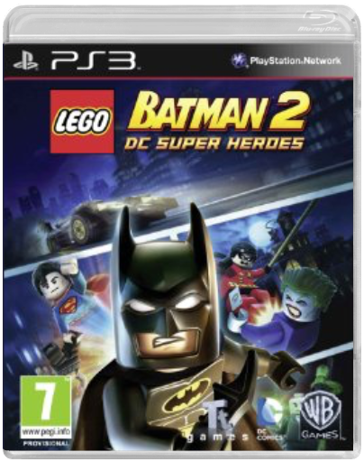
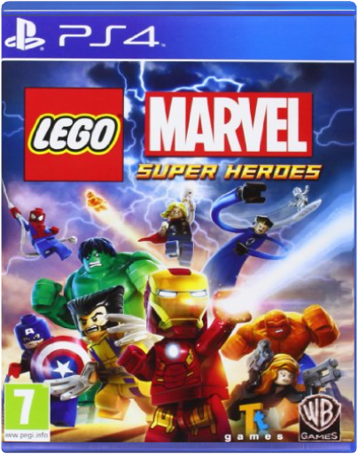
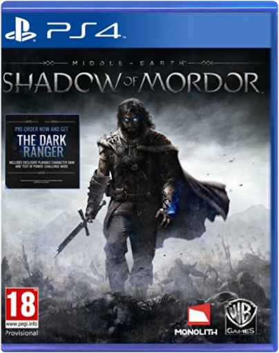
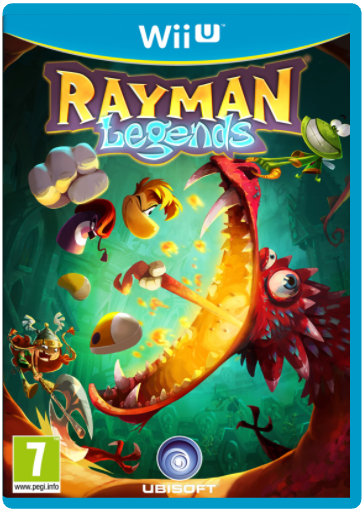
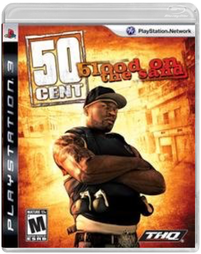
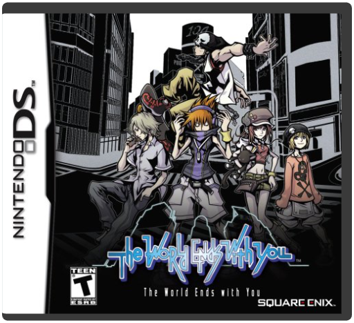

 LEGO Batman 2: DC Super HeroesWarner Bros. Interactive Batman and Robin return in LEGO Batman 2 DC Super Heroes, the highly-anticipated sequel to the best-selling LEGO videogame of all time, which to date has sold more than 11 million units worldwide.
This time the Dynamic Duo join forces with other famous DC super heroes including Superman, Wonder Woman and Green Lantern to stop the notorious villains Lex Luthor and The Joker from destroying Gotham City. Batman fans of all ages will enjoy a new and original story filled with classic LEGO videogame action and humor as players fight to put the bad guys back behind bars. Explore all of Gotham City in the Batmobile, Batwing and moreUse all-new abilities including flight, heat vision and super breathFor the first time, LEGO has a voice! Talking minifigures enhance an all-new original storylineMaster gadgets and suits like Batman's Electricty Suit and Power Suit, and Robin's Hazard CannonPlay with friends using drop-in/drop-out co-op play with dynamic split screen  LEGO Marvel Super HeroesWarner Bros. Interactive Bringing the exciting gameplay experience home with LEGO Marvel Super Heroes for PlayStation 4. LEGO Marvel Super Heroes features an entirely original story that encapsulates the entire Marvel Universe. Take control of over 100 unique Marvel characters like Iron Man, Spider-Man, the Hulk, Captain America, Wolverine and more as they unite to stop Loki and a host of other Marvel villains from assembling a super-weapon capable of destroying the world. Chase down Cosmic Bricks as they travel across LEGO Manhattan and visit key locations from the Marvel Universe, such as Stark Tower, Asteroid M, a HYDRA base and the X-Mansion. Plus, you can now take part in co-op remotely by synching your PlayStation Vita to your PlayStation 4.  Middle-Earth: Shadow of MordorWarner Bros Interactive Entertainment UK We are currently out of stock, our delivery is due Friday 10th Oct when stock will be shipped from.
The Dark Ranger DLC IncludesDark Ranger Character Skin: Begin your own quest for vengeance with a new Dark Ranger character skin that embodies Talion’s darker side“Test of Power” Challenge Mode: Face Sauron’s Captains and defeat them to earn powerful Runes and gain a head start in the game.Access to Exclusive Leaderboards for “Test of Power” Challenge Mode: Test your speed, skill and strategy and measure yourself against your friends on the leaderboards in this challenge mode
In Middle-earth Shadow of Mordor PS4, gamers take on the role of Talion, a valiant ranger whose family is slain in front of him the night Sauron and his army return to Mordor, moments before his own life is taken. Resurrected by a Spirit of vengeance and empowered with Wraith abilities, Talion ventures into Mordor and vows to destroy those who have wronged him. Through the course of his personal vendetta, Talion uncovers the truth of the Spirit that compels him, learns the origins of the Rings of Power and ultimately confronts his true nemesis.
Every enemy that players face is a unique individual, differentiated by their personality, strengths and weaknesses. Through the Nemesis System, enemy relationships and characteristics are shaped by player actions and decisions to create personal archenemies that remember and adapt to the player and are distinct to every gameplay session. Gamers are able to craft their own battles, enemies and rewards within the dynamic world that remembers and adapts to their choices, delivering a unique experience to every player.
Key Features Take on the role of Talion, a valiant ranger whose family was slainLearn ab  Rayman LegendsUbisoft Rayman Legends
Rayman named platformer of the year and winner of multiple artistic and musical achievements is coming to the Wii U with a brand new adventure. Michel Ancel celebrated creator of Rayman Beyond Good amp Evil and the Raving Rabbids is bringing his innovative creativity to this new and exciting platform. Rayman Legends makes full use of the power of the Wii U. With the new Wii U controller discover new ways to platform with its touch based gameplay gyroscope technology and even the ability to extend your playing experience when the TV is off. Additionally the power of the machine has helped pave the way for new more detailed graphics and lighting.
Rayman Globox and the Teensies are off wandering through an enchanted forest when they discover a mysterious tent filled with a series of captivating paintings. As they look more closely they notice each painting seems to tell the story of a mythical world. While focusing on a painting that shows a medieval land they are suddenly sucked into the painting entering the world and the adventure begins. The gang must run jump and fight their way through each world to save the day and discover the secrets of every legendary painting.
Wii U Showcase Rayman Legends takes full advantage of the Wii U and its new controller s capabilities. Use the touch screen to take out enemies manipulate platforms cut ropes to clear a path and much more. With the gyroscope technology you can move rotating platform and there are many more surprises to come
The Game Must Go On The Wii U allows you to keep playing the game even when your television is off. You will be able to continue Rayman s adventure on the screen of the Wii U s new wireless controller.
5 Player Co op Gameplay Now more player |  50 Cent: Blood on the SandTHQ THQ 50 Cent: Blood on the Sand for PS3 The world's biggest hip-hop star, is back in an all new, fast paced arcade style third-person shooter for Next-Gen consoles. In 50 Cent: Blood on the Sand, payershit the road with 50 Cent and and his posse, G-Unit, as an innocent concert tour in the Middle-Eastturns into a full-fledged war. At its root is a mysterious item that a local promoter talks 50 intoaccepting in lieu of cash. The problem is that everyone 50 meets seems to want to take it from him,so there is obviously more to this trinket than meets the eye. But what is 50's is 50's and he is willing to bring the hurt down on any and all comers who cross him and try to take what isn't theirs. Features: * Fast Action Arcade Gameplay: Explode into arcade style fun with Run & Gun shooter gameplay with an incorporated cover system, buddy non-player character (NPC) AI featuring the G-Unit, Vehicle combat missions and Helicopter - rail shooter levels. * Arcade Style Points System: Earn money & points via kills and uncovering cache's. Use money to purchase new weapons (20 total) and/or Counterkill Finishing Moves that gives you thecontrol in deciding how to finish off the enemy. * Drop-In/Drop-Out Co-Op Online Multiplayer: 50 never runs alone. He's always got his G-Unit crew covering his back. Select a member of G-Unit to fight by 50's side - each with their own signature weapon. And with online co-op multiplayer support have your friends join your game online anytime as a member of G-Unit's crew to help 50 get payback on those who wronged him. * Explosive Driving andFlying Sequences: Drive through the city's water runoffs and storm drains in high speed pursuit. Get behind the wheel as 50 while a member of your G-Unit shoots down pursuing enemies. Get inside a helicopter, mount the gatling gun and shoot across the opium fields of the mountai  World Ends with YouSquare Enix LLC The story begins as Neku Sakuraba, an unsociable 15-year-old boy, unexpectedly wakes up in the Shibuya shopping district of Tokyo, Japan. While trying to piece together his rude awakening, he receives a strange text message warning him that he will cease to exist unless he accomplishes a certain mission. Although he barely has time to grasp what is happening to him, he commences his assigned task in the mysterious streets of Shibuya. |


 Made with Delicious Library
Made with Delicious Library